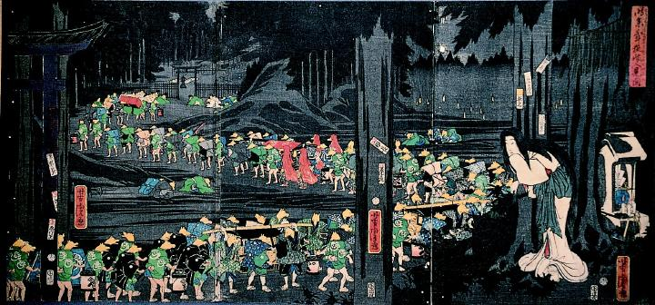

深夜、刻参りを行う女が偶然にも狐の嫁入り行列を目撃する。長蛇の行列は、神社へと向かっている。よほど身分の高い狐なのか、出迎える狐の神官はみな平伏している。
著作者：歌川芳虎／出典：親書誌：A5_pushkin_0036：時参不斗狐嫁入見図；トキマイリハカラズモキツネノヨメイリヲミルズ／日付：2011／資源識別子：A5_pushkin_0036_0001_0000
Copyright (c)2010- International Research Center for Japanese Studies, Kyoto, Japan. All rights reserved.